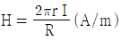
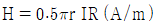
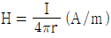
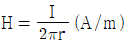

자기비파괴검사기사 (2018-08-19 기출문제)
1과목: 비파괴검사 개론
1. 비파괴검사의 특성에 대한 설명 중 틀린 것은?
- 방사선투과시험은 초음파탐상보다 면상결함을 잘 탐상할 수 있다.
- 표면 결함의 검출에 적합한 시험은 자분탐상시험, 침투탐상시험 및 와전류탐상시험이다.
- 방사선투과시험은 원리적으로 투과법이다.
- 초음파탐상시험은 원리적으로 반사법이 많이 이용되고 있다.
(정답률: 74%)

2. 염색침투검사법이 형광침투검사법에 비해 좋은 점은?
- 검출감도가 좋다.
- 표면이 검은 시험체에 좋다.
- 어두운 곳에서도 검사가 가능하다.
- 현장에서 간편하게 이용할 수 있다.
(정답률: 79%)
3. 초음파탐상검사의 품질평가 적용 예에 대해 기술한 것 중 옳은 것은?
- 규격이나 절차서에 근거하여 제조되고, 규정된 품질인가 아닌가를 확인하기 위한 품질관리의 한 수단으로 초음파탐상검사를 실시한다.
- 품질관리를 위한 관리한계로 결함검사의 판정기준을 이용하는 것은 불가능하다.
- 품질관리의 관리한계는 주어진 설계기준 하에서 사용되며 중대한 재해를 초래하는 파괴사고를 발생할 우려가 있다는 판단에 근거하여 정해진다.
- 품질평가에서 합격한 구조물은 사용개시 후 발생할 수 있는 모든 조건이 고려되었기 때문에 손상 고장의 원인이 되는 인자는 존재하지 않는다.
(정답률: 70%)
4. 와류탐상검사에서 전류 흐름에 대한 코일의 총 저항을 무엇이라 하는가?
- 인덕턴스
- 리액턴스
- 임피던스
- 리프트옵
(정답률: 75%)
5. 다음 중 LASER(레이저)가 이용되는 검사법은?
- Holography
- Thermography
- Xeroradiography
- Auto radiography
(정답률: 64%)
6. 표점거리 100mm인 인장시험편의 연신율이 30%였을 때, 늘어난 길이는 몇 mm인가?
- 10
- 20
- 30
- 40
(정답률: 80%)
7. 구리의 성질에 대한 설명 중 틀린 것은?
- 전연성이 좋아 가공이 용이하다.
- 전기 및 열의 전도성이 우수하다.
- 화학적 저항력이 작아서 부식이 심하다.
- Zn, Sn, Ni 등과 용이하게 합금을 만든다.
(정답률: 70%)
8. 샤르피 충격시험에 대한 설명으로 틀린 것은?
- 충격흡수에너지를 비교적 간단히 측정할 수 있는 시험법이다.
- 체심입방격자 합금은 온도변화에 따라 연성-취성 전이를 나타낸다.
- 충격흡수에너지는 인장시험의 응력-변형률 곡선의 면적인 인성과 관계가 있다.
- 일반적으로 면심입방격자 합금은 샤르피 충격시험에서 취성파괴양식을 보인다.
(정답률: 51%)
9. Al-Si 합금을 용해하여 용탕 속에 불화 알칼리 또는 금속 나트륨을 첨가하여 기계적 성질을 향상시키는 것은 어느 기구에 의해 강화되는 것인가?
- 고용강화
- 분산강화
- 석출강화
- 입자미세화강화
(정답률: 55%)
10. 소성변형의 가공방법을 설명한 것 중 틀린 것은?
- 압연가공 : 회전하는 Roll 사이에 소재를 통과시켜 성형
- 인발가공 : 괴상의 소재를 고온에서 가압하여 판재로 성형
- 프레스 가공 : 판재를 펀치와 다이 사이에 압축하여 성형
- 압출가공 : 다이를 통하여 금속을 밀어내어 제품을 성형
(정답률: 77%)
11. 다음 중 철강 재료에서 주요 합금원소가 크롬니켈이며, 내열 및 내식성이 우수한 것은?
- 스테인리스강
- 탄소강
- 해드필드강
- 황복합쾌삭강
(정답률: 70%)
12. 비중이 1.74로 실용 금속 중에서 가장 가볍고, 조밀육방격자의 결정구조를 가지는 것은?
- Mg
- W
- Al
- Ti
(정답률: 81%)
13. 마텐자이트형 변태의 일반적인 특징이 아닌 것은?
- 마텐자이트 변태는 무확산 변태이다.
- 마텐자이트 변태는 고용체의 단일상이다.
- 마텐자이트 변태로 인해 강의 경도가 상승된다.
- 마텐자이트 변태를 하면 표면기복이 없어진다.
(정답률: 47%)
14. 분말야금법에 대한 설명으로 틀린 것은?
- 생산된 제품에 기공이 존재한다.
- 용해법으로 생기는 편석, 결정립 조대화의 문제점이 적다.
- 제품의 정밀도가 좋지 않으며 용융점까지의 고온이 필요하다.
- 최종제품의 형상으로 제조할 수 있어 절삭가공을 생략할 수 있다.
(정답률: 61%)
15. 강의 열처리법 중 담금질된 강을 A1변태점이하의 온도에서 가열하는 것으로 인성을 향상시키는 것은?
- Quenching
- Tempering
- Annealing
- Normalizing
(정답률: 54%)
16. 직류 아크 용접 시 두 전극 사이의 아크 전압 분포를 나타내는 식으로 옳은 것은? (단, Va : 아크 전압, VA : 양극 전압 강하, Vk : 음극 전압 강하, Vp : 아크 기둥 전압 강하이다.)
- Va=VA-Vk+Vp
- Va=VA+Vk-Vp
- Va=VA-Vk-Vp
- Va=VA+Vk+Vp
(정답률: 60%)
17. 아크 용접기의 정격 2차 전류가 400A 인 용접기로 용접작업 시 실제 225 A를 사용했다면 이 용접기의 허용사용률은 약 몇 40% 인가? (단, 정격사용률은 40% 이다.)
- 96.2
- 1⑤.3
- 126.4
- 156.3
(정답률: 57%)
18. 용접용 지그 사용 시 장점이 아닌 것은?
- 잔류응력을 방지할 수 있다.
- 동일제품을 대량생산할 수 있다.
- 작업을 용이하게 하고 용접 능률을 높인다.
- 제품의 정밀도와 용접부의 신뢰성을 높인다.
(정답률: 60%)
19. 잔류응력을 완화시키기 위한 방법이 아닌 것은?
- 피닝법
- 금속침투법
- 응력제거 풀림법
- 기계적 응력 완화법
(정답률: 66%)
20. 다음 중 불활성 가스의 종류가 아닌 것은?
- 아르곤
- 헬륨
- 수소
- 네온
(정답률: 56%)
2과목: 자기탐상검사 원리
21. A형 표준시험편을 사용하여 전류 값을 설정하는데 사용하는 식은? (단, Io : A형 표준시험편에 자분모양이 나타날 때 전류 값(A), I : 설정할 전류값(A), Ho : A형 표준시험편에 자분모양이 나타날 때의 자계의 세기(Oe), Ht : 검사시 적용되는 자계의 세기(Oe)이다.)
- I = Io × Ho / Ht
- I = Io × Ht / Ht
- I = Io2 × Ho / Ht
- I = It2 × Ho / Ho
(정답률: 52%)
22. 봉강, 강관의 탐상에서 원주방향으로 적용하여 축방향의 결함검출에 이용되는 누설자속탐상의 자화방법은?
- 코일법
- 프로드법
- 극간법
- 축통전법
(정답률: 15%)
23. 솔레노이드에 의한 자계에 대한 설명 중 틀린 것은?
- 긴 통에 원형 도선을 여러 번 감은 코일을 솔레노이드라 한다.
- 솔레노이드 내부에서의 자계의 세기는 전류의 세기에 반비례한다.
- 솔레노이드 내부에서의 자계의 세기는 단위 길이 당 감은 수에 비례한다.
- 솔레노이드 내부에서의 자력선은 나란하므로 균일한 자계를 얻을 수 있다.
(정답률: 72%)
24. 다음 중 코일법으로 여러 개 시험체를 동시에 시험하는 경우 고려하여야 할 사항이 아닌 것은?
- 코일의 지름이 길이에 비하여 커지면 자계강도는 코일의 내벽이 제일 강하고 중심에 가까울수록 약해진다.
- 반자계는 시험체가 하나인 경우와는 달라서 시험체 서로에 영향을 미친다.
- 잔류법으로 시험할 때에는 자기펜자국이 생기지 않도록 주의해야 한다.
- 코일 내에 자계 세기의 분포가 균일하므로 시험체 위치는 특별히 고려하지 않아도 된다.
(정답률: 86%)
25. 자분탐상시험법 중에서 습식법의 장점이 아닌 것은?
- 아주 미세한 표면 균열에 대하여 가장 감도가 높은 방법이다.
- 소형 부품을 대향으로 신속하게 탐상할 수 있는 방법이다.
- 표면 밑에 존재하는 불연속을 용이하게 검출할 수 있다.
- 자분 입자의 유동성이 좋다.
(정답률: 77%)
26. 다음 중 자화고무법(Magnetic Rubber Test)의 장점을 설명한 것으로 틀린 것은?
- 검사에 소요되는 시간이 짧다.
- 코팅된 시험체도 검사가 가능하다.
- 육안관찰이 어려운 부분의 검사가 가능하다.
- 피로균열의 발생과 성장과정의 관찰이 가능하다.
(정답률: 68%)
27. 전류 차단시의 위상 조절이 불가능하여 원하는 잔류자속밀도를 얻기 어려우므로 잔류법으로의 검사는 곤란하고, 연속법으로만 적용해야 하는 자화전류의 종류는?
- 직류
- 맥류
- 교류
- 충격전류
(정답률: 80%)
28. 자분탐상시험 시 가장 쉽게 검출되는 불연속으로 다음 중 옳은 것은?
- 결함의 주축이 자력선의 방향과 평행할 때
- 결함의 주축이 자력선의 방향과 직각일 때
- 결함의 주축이 자력선의 방향과 45˚ 때
- 결함의 주축이 자력선의 방향과 15˚ 때
(정답률: 78%)
29. 반경 r인 원형 코일에 I의 전류가 흐를 때 코일의 중심점에서의 자계의 세기에 대한 설명으로 옳은 것은?
- I에 비례하고, r에 비례한다.
- I에 비례하고, r에 반비례한다.
- I에 반비례하고, r에 비례한다.
- I에 반비례하고, r에 반비례한다.
(정답률: 79%)
30. ASME 규격에 따라 길이가 18cm, 두께가 6cm인 시험체를 코일법으로 검사하려고 한다. 사용할 자화전류(A.T)는?
- 15000A.T
- 11600A.T
- 900A.T
- 7000A.T
(정답률: 79%)
31. 다음 중 자분탐상시험 시 동일 조건하에서 표면 아래 특정 가능한 깊은 곳까지 결함을 가장 잘 검출할 수 있는 자화전류와 분산매로 조합된 것은?
- 교류, 습식
- 교류, 건식
- 직류, 습식
- 직류, 건식
(정답률: 64%)
32. 연속법과 비교하였을 때 잔류법을 이용한 자분탐상검사로 탐상이 가장 힘든 제품은?
- 공구강
- 스프링간
- 연철
- 나사의 복잡한 형상부분
(정답률: 57%)
33. 다음은 자분의 의사지시모양을 판별하는 방법이다. 잘못된 것은?
- 시험품을 탈자하고 재시험한다.
- 금속현미경으로 관찰 후, 침투탐상검사를 한다.
- 연속법 후 잔류법으로 의사지시모양을 확인한다.
- 표면은 매끄럽게 하여 재시험하거나 육안검사를 실시한다.
(정답률: 64%)
34. 의사지시모양이 자기펜 흔적으로 의심되는 경우 이의 판별법은?
- 탈자 후 재자화
- 잔류법으로 시험
- 액체침투탐상시험으로 재시험
- 자극의 위치를 바꾸어 재자화
(정답률: 93%)
35. 일반주철과 구상화 흑연주철을 용접한 용접부에 대한 자분탐상검사를 실시하였더니 두 금속과 용접부 경계에 선형지시가 발생하는 경우가 아닌 것은?
- 투자율이 다른 경우
- 금속조직이 다른 경우
- 융합불량이 나타나는 경우
- 표면 기공이 나타나는 경우
(정답률: 60%)
36. 다음 전처리 방법 중 잘못된 것은?
- 최종 검사이므로 모든 부품을 조립한다.
- 시험면을 깨끗이 한다.
- 강하게 자화된 제품은 탈자한다.
- 검사 대상이 아닌 볼트구멍은 테이프 등으로 막는다.
(정답률: 93%)
37. 다음 중 자분탐상시험의 연속법에 대한 설명으로 옳은 것은?
- 자화전류를 차단한 후 자분을 연속 적용하는 것이다.
- 보자성이 낮은 탄소강의 검사에 유용하다.
- 고탄소강 및 고탄소강 합금의 검사에 유용하다.
- 잔류법에 비해 작업성이 좋고, 다량의 소형 시험체 탐상에 작업 능률이 우수하다.
(정답률: 45%)
38. 다음 중 자계 영역 내에서 자력에 약하게 작용하는 재료를 무엇이라 하는가?
- 상자성체
- 극자성체
- 강자성체
- 반자성체
(정답률: 75%)
39. 다음 중 비교적 작은 자계에서 자기포화가 되는 재료는 어떤 것인가?
- 고탄소강 또는 보자력이 큰 것
- 저탄소강 또는 보자력이 큰 것
- 고장력강 또는 잔류자기가 큰 것
- 스테인리스강 또는 담금질한 것
(정답률: 59%)
40. 강자성 물질의 시험체에 자화력을 계속 증가시켜도 자계의 세기가 더 증가하지 않을 경우 이에 대한 현상을 설명한 것으로 옳은 것은?
- 잔류자기를 가진 것을 나타낸다.
- 자기적으로 포화되었다.
- 항자력이 최대임을 나타낸다.
- 보자성이 최소임을 나타낸다.
(정답률: 80%)
3과목: 자기탐상검사 시험
41. 압연한 루판의 자분탐상검사에서 검출할 수 있는 결함 중, 표면에서는 잘 나타나지 않지만 단면부에서 판 표면에 평행한 선모양으로 나타나는 자분 모양을 형성하는 결함의 종류는?
- 고온균열
- 라미네이션
- 스트링거
- 시임(Seam)
(정답률: 84%)
42. 프로드법으로 강재를 검사할 때 프로드 접촉부위에 아크에 의한 과열로 시험체가 손상될 우려가 있다. 다른 검사조건이 동일하다면, 다음 중 아크가 발생하기 가장 쉬운 재질은?
- 탄소함유량이 0.⑤%인 강
- 탄소함유량이 0.08% 이하인 강
- 탄소함유량이 0.1~0.2%인 강
- 탄소함유량이 0.3~0.4% 이상인 강
(정답률: 69%)
43. 자분탐상검사에서 용접시공 시 발생한 용접결함이 아닌 것은?
- 응력부식 균열
- 고온 균열
- 저온 균열
- 크레이터 균열
(정답률: 68%)
44. 직선전류에 의한 자계에서 도체에 400A의 전류가 흐를 때 조체에서 1m 떨어진 거리에서 자계의 강도(A/m)는?
- 약 30
- 약 60
- 약 90
- 약 120
(정답률: 52%)
45. 자분탐상검사에서 습식자분에 사용되는 강자성체 자분의 입도로 적합한 것은?
- 0.01~0.1μm
- 0.2~60μm
- 70~90μm
- 100~600μm
(정답률: 52%)
46. 프로드법에서 높은 자속밀도가 전극부위에 방사상으로 형성되는 자분모양을 무엇이라고 하는가?
- 전극지시
- 재질경계지시
- 단면급변지시
- 단류선지시
(정답률: 89%)
47. 자분탐상검사에서 절차서를 작성할 때 자분모양의 기록 방법으로 틀린 것은?
- 전사
- 스케치
- 사진 촬영
- 모형으로 제작
(정답률: 88%)
48. 자분탐상검사에서 습식법에 의해 시험면에 검사액을 적용할 때 사용하는 방법이 아닌 것은?
- 분무법
- 솔질법
- 정전기법
- 침지법
(정답률: 73%)
49. 다음 중 강괴가 압연과정으로 강판이 될 때 강괴에 들어 있는 기공이나 불순물 같은 결함들이 외부 면과 평행하게 되어 존재하는 결함을 무엇이라 하는가?
- 파이프(Pipe)
- 개재물(Includsion)
- 편석(Segregation)
- 라미네이션(Lamination)
(정답률: 80%)
50. 자분탐상검사에서 파이프, 환봉강 등 표면을 탐상하기 위해 시험체에 직접 전류를 흘리는 방법으로 맞는 것은?
- 극간법을 이용한 선형자화
- 코일법을 이용한 원형자화
- 프로드법을 이용한 선형자화
- 축통전법을 이용한 원형자화
(정답률: 69%)
51. 자분탐상검사에서 자분의 적용법에 대한 설명으로 옳은 것은?
- 환봉과 같은 중, 대형 검사품에는 휴대가 간편한 건식자분을 적용하는 것이 일반적이다.
- 표면 결함의 검출에는 항상 건식법을 사용해야 한다.
- 코일법에서는 습식 자분을 사용할 경우 솔질법을 적용해서는 안된다.
- 형상이 복잡하고 미세한 결함의 검출에는 습식법을 사용하는 것이 좋다.
(정답률: 79%)
52. 자분탐상검사에서 표면 연마 후 약품으로 부식시켜 금속 현미경에 의한 미시적 시험 또는 거시적 시험으로 확인할 수 있는 의사지시로 맞는 것은?
- 자기펜 자국
- 단면 급변 지시
- 자극지시
- 투자율이 다른 재질 경계 지시
(정답률: 66%)
53. 자분탐상검사에서 구리 봉과 같은 비자성체에 직류전류가 흐를 때 나타나는 현상으로 틀린 것은?
- 자계의 세기는 봉의 외부 표면에 이를 때까지 점차 감소한다.
- 자계의 세기는 봉의 반지름이 증가할수록 감소한다.
- 전류가 증가하면 자계의 세기도 비례하여 증가한다.
- 자계의 세기는 봉의 중심에서 0(zero)이 된다.
(정답률: 47%)
54. 자분탐상검사에서 시험체에 자극이 있는 경우 탈자한 후 시험체에 대한 탈자 정도를 확인하는 방법으로 적합하지 않은 것은?
- 홀소자나 자기 다이오드를 사용한 자속계로 측정
- 탈자 후 시험체를 강자성체에 마찰하여 자분을 적용하고, 마찰부분의 자분 부착여부로 확인
- 철분이나 철핀 등을 시험체에 흡착하는 방법
- 시험체의 자극에 자침을 가까이하여 자침의 움직이는 각도로 그 잔류 자극의 세기를 측정
(정답률: 64%)
55. 자분탐상검사에서 축통전법을 적용하는 경우 시험면에서의 자계의 세기(H)를 구하는 공식으로 다음 중 맞는 것은? (단, 시험편의 반지름을 r(m), 자화전류의 세기를 I(A), 시험체의 전기저항을 R(Q) 이라고 한다.)




(정답률: 77%)
56. 용접부를 프로드법으로 검사할 때 다음 설명 중 옳은 것은?
- 극간법에 비하여 감도가 떨어진다.
- 프로드 간격은 항상 일정하게 유지해야 한다.
- 건식자분을 사용하면 표면직하 불연속에 대해 감도가 나쁘다.
- 프로드의 탈착은 반드시 통전하고 있는 상태에서 행위가 이루어져야 한다.
(정답률: 74%)
57. 자분탐상검사에서 선형자계를 발생시켜 검사하는 방법은?
- 코일법
- 프로드법
- 축통전법
- 전류관통법
(정답률: 76%)
58. 단조품의 자분탐상검사에서 검출하기 가장 어려운 결함은?
- 겹침
- 용입부족
- 백점
- 표면 미세기공
(정답률: 59%)
59. 압연강재 또는 단조품에서 볼 수 있는 비금속 개재물의 표면 또는 표면하의 결함과 누설자속이 최소인 결함을 검사할 때 다음 중 어느 자화법이 가장 적합한가?
- 습식 연속법
- 건식 연속법
- 습식 잔류법
- 건식 잔류법
(정답률: 41%)
60. 다음은 누설자속탐상법에서 결함 누설자속의 검출에 이용되는 센서(sensor)에 대한 설명이다. 틀린 것은?
- 자계 검출용 센서로 사용되는 탐사코일(search coil)의 출력전압은 코일의 감은 수, 시험체와 센서의 상대속도 등에 의해 정해진다.
- 누설자속량은 직접 전기신호로 변환시키는 반도체 자기센서, hall 소자, 자기 다이오드, 저기저항효과 소자 등은 센서의 치수와 자기 감도가 중요하지만, 시험체의 온도에 영향을 적게 받기 때문에 광범위하게 사용되고 있다.
- 직류자계 검출용인 집적형은 고감도이지만, 출력은 자기특성에 의존한다.
- 자기 테이프(tape)는 강재를 자화한 후 결함으로부터의 누설자속을 직접 자기테이프 상의 자성 막에 기록하는 것으로 전기신호로의 변환은 2차적이다.
(정답률: 56%)
4과목: 자기탐상검사 규격
61. 철강 재료의 자분 탐상 시험방법 및 자분모양의 분류(KS D 2013)에서 시험하는 부분에 실제로 움직이고 있는 자장을 규정한 용어는?
- 반자장
- 실효자장
- 유효자장
- 누설자장
(정답률: 68%)
62. 보일러 및 압력용기에 대한 자분탐상검사(ASME Sec. V, Art.7)의 규정에 따라 선형자화법으로 자분탐상시험을 실시하고자 한다. 길이 12.5인치, 직경 2.5인치인 봉형시험체의 시험에 필요한 자화전류는? (단, 코일 권수는 5이다.)
- 1000A
- 1400A
- 1800A
- 5000A
(정답률: 58%)
63. 철강 재료의 자분 탐상 시험방법 및 자분모양의 분류(KS D 2013)에서 Al형 표준 시험편과 Cl형 표준 시험편의 다른 점은?
- 재질
- 시험편 크기
- 자분의 적용
- 열처리 방법
(정답률: 69%)
64. 보일러 및 압력용기에 대한 자분탐상검사(ASME Sec. V, Art.7)에서 여러 가지 지시들이 나타났을 때 평가는?
- 시험체는 폐기되어야 한다.
- 지시 부분을 제거 후 사용해야 된다.
- 지시의 깊이를 알고자 단면을 잘라 본다.
- 모든 지시는 참조 규격의 합격기준에 따라 평가한다.
(정답률: 88%)
65. 보일러 및 압력용기에 대한 자분탐상검사(ASME Sec.25 SE-709)에서 습식 자분탐상검사에 사용되는 경질유 분산매의 최소 인화점은?
- 83℃
- 90℃
- 103℃
- 113℃
(정답률: 43%)
66. 보일러 및 압력용기에 대한 자분탐상검사(ASME Sec. V, Art.7)에 규정된 비자성 표면 콘트라스트 강화제의 적용에 관한 사항 중 틀린 것은?
- 비자성 표면콘트라스트 강화제는 일반적으로 백색 페인트제를 사용한다.
- 자분 콘트라스트를 증대시키기에 충분한 양만큼만을 적용해야 한다.
- 강화를 통해서 지시가 검출될 수 있음을 검증해야 한다.
- 강화제 최대 두께는 측정되어야 한다.
(정답률: 61%)
67. 철강 재료의 자분 탐상 시험방법 및 자분모양의 분류(KS D 2013)에 규정된 자화방법 중 시험체의 구멍 등에 통과시킨 도체에 전류를 흐르게 하는 방법은?
- 축 통전법
- 전류 관통법
- 직각 통전법
- 자속 관통법
(정답률: 70%)
68. 철강 재료의 자분 탐상 시험방법 및 자분모양의 분류(KS D 2013)에서 용접부의 열처리 후, 압력용기의 내압시험 종료 후에 행하는 자화방법은 원칙적으로 어떤 방법을 사용하도록 규정하고 있는가?
- 축통전법
- 직각통전법
- 프로드법
- 극간법
(정답률: 81%)
69. 보일러 및 압력용기에 대한 자분탐상검사(ASME Sec. V, Art.7)에 규정된 선형자화법에서 코일 자화법을 사용할 수 없는 L/D의 비는?
- 2미만
- 3미만
- 4미만
- 5미만
(정답률: 78%)
70. 철강 재료의 자분 탐상 시험방법 및 자분모양의 분류(KS D 2013)에서 시험품에 가한 교류 전류나 교류 자속이 표면의 가까운 부분에 모이는 현상을 규정한 용어는?
- 집중효과
- 표피효과
- 근접효과
- 표면효과
(정답률: 87%)
71. 보일러 및 압력용기에 대한 자분탐상검사(ASME Sec. V, Art.7)에 규정된 자화기법이 아닌 것은?
- 선형자화법
- 원형자화법
- 횡단자화법
- 다방향자화법
(정답률: 72%)
72. 철강 재료의 자분 탐상 시험방법 및 자분모양의 분류(KS D 2013)에서 자계의 방향 및 강도를 확인할 필요가 있을 때 사용되지 않는 것은?
- A형 표준시험편
- B형 대비시험편
- C형 표준시험편
- 가우스미터
(정답률: 70%)
73. 철강 재료의 자분 탐상 시험방법 및 자분모양의 분류(KS D 2013)에 따라 잔류법으로 시험하는 경우 자분의 적용 전에 다른 강자성체를 시험면에 접촉시켜서는 안되는 이유는?
- 자극지시가 생기기 때문이다.
- 전극지시가 생기기 때문이다.
- 자기펜 자국이 생기기 때문이다.
- 재질경계 지시가 생기기 때문이다.
(정답률: 77%)
74. 보일러 및 압력용기에 대한 자분탐상검사(ASME Sec. V, Art.7)에 따라 프로드를 이용하여 자화할 때, 프로드의 간격을 3인치 미만으로 사용하지 않는 이유는?
- 시험체의 소손을 방지하기 위함이다.
- 작업자에게 감전의 우려가 있기 때문이다.
- 시험체에 국부과열을 발생시키기 때문이다.
- 프로드 주위에 자분의 집적을 유발하기 때문이다.
(정답률: 56%)
75. 철강 재료의 자분 탐상 시험방법 및 자분모양의 분류(KS D 2013)에서 시험기록의 기호가 P-1500Ⓓ 일 때 그 의미로 옳은 것은?
- 축통전법을 사용하여 교류 1500A의 전류를 적용
- 코일전법을 사용하여 맥류 1500A의 전류를 적용
- 프로드법을 사용하여 직류 1500A의 전류를 적용
- 극간전법을 사용하여 충격전류 1500A의 전류를 적용
(정답률: 88%)
76. 보일러 및 압력용기에 대한 자분탐상검사(ASME Sec.25 SE-709)에서 자계가 제품을 가로질러 형성되고 자력선이 제품의 외부로 안전한 폐곡선을 이룰 때 사용되는 용어는?
- 선형(longitudinal) 자화
- 원형(circular) 자화
- 횡단(transverse)
- 환형(toroidal) 자화
(정답률: 49%)
77. 철강 재료의 자분 탐상 시험방법 및 자분모양의 분류(KS D 2013)에 규정된 C형 표준시험편 인공 흠의 치수로 옳은 것은?
- 깊이 8±1μm, 나비 50±8μm
- 깊이 10±1μm, 나비 50±8μm
- 깊이 8±1μm, 나비 60±8μm
- 깊이 10±1μm, 나비 60±8μm
(정답률: 42%)
78. 보일러 및 압력용기에 대한 자분탐상검사(ASME Sec. V, Art.7)에서 프로드법으로 직류를 사용할 때, 시험체 두께가 3/4인치 이상일 경우 프로드 간격에 대한 자화 전류의 범위는 몇 A/in 인가?
- 90~110
- 100~125
- 110~130
- 120~140
(정답률: 75%)
79. 철강 재료의 자분 탐상 시험방법 및 자분모양의 분류(KS D 2013)에서 길이 3mm인 선상의 자분모양과 길이 1.5mm인 성상의 자분모양이 동일 선상에서 서로 1.8mm 떨어져 있을 때 자분모양의 분류는?
- 3mm 의 선상 자분모양
- 3mm 의 선상 자분모양 및 1.5mm 의 선상 자분모양
- 4.5mm 의 연속한 자분모양
- 6.3mm 의 연속한 자분모양
(정답률: 70%)
80. 철강 재료의 자분 탐상 시험방법 및 자분모양의 분류(KS D 2013)에 규정된 자화방법과 부호의 조합이 틀린 것은?
- 극간법 - M
- 프로드법 - P
- 축 통전법 - ER
- 자속 관통법 - I
(정답률: 80%)